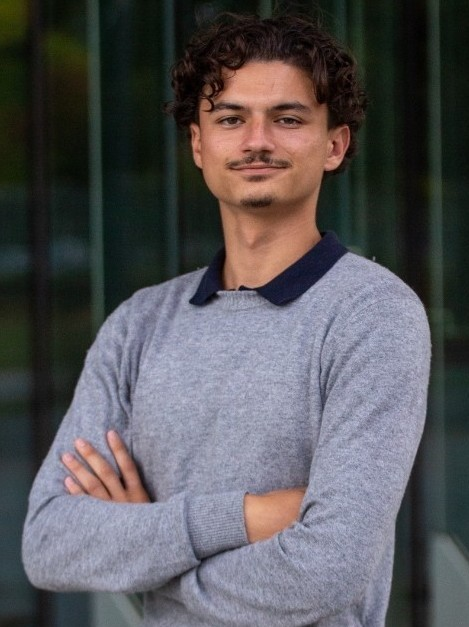

Quantum hardware · Silicon photonics · Single-photon sources. Building toward scalable quantum networks.

Curiosity & drive
When something interests me, I go all in. It started with quantum mechanics and statistical physics at ISAE-SUPAERO, then laser physics and quantum engineering. Outside class, I kept going: IBM certifications, quantum optics, semiconductor devices. Each one pulled me a step further.
Sports
Five years of competitive climbing, four years of volleyball. Climbing taught me to stay calm when things get hard. Volleyball gave me a taste for the collective, for the kind of trust you build with a team over time.
International profile
French and Moroccan by upbringing, English by practice. Growing up between two languages and two cultural frameworks developed a natural ease with unfamiliar environments, something I'll put to use during six months of research in the US.
Aerospace engineering. Progressive specialization toward quantum hardware and photonics. 6-month research internship at UCF Q-Lab detailed in the Research section.
Lycée Thiers, Marseille — CPGE
PCSI then PSI* (top-track class). Ranked 106th at the Mines-Ponts competitive entrance exam. Prépa teaches you how to work when the material is hard and the pace is fast.
Lycée Militaire d'Aix-en-Provence
Baccalauréat · Physics, Mathematics, Advanced Mathematics. Graduated with highest honours (18.24/20, félicitations du jury). The military environment built an early habit of discipline and self-organisation.
Deterministic generation and optical characterization of novel silicon color centers acting as single-photon emitters in the telecom band. These silicon-based spin-photon qubits are integrated into nanophotonic structures on SOI and studied as building blocks for scalable on-chip quantum computing and long-distance quantum networking. Experimental work includes g²(τ) measurements, Hanbury Brown–Twiss interferometry, Hong-Ou-Mandel interference experiments, and data analysis combining results with supporting simulations.
Skills
All completed on personal time, alongside engineering studies at ISAE-SUPAERO. Starting Aug. 2025, this represents over 250 hours of self-directed study: quantum computing theory, quantum optics, semiconductor physics, nanophotonics, and hardware fabrication.
Quantum Optics & Photonics
Mécanique Quantique
Quantum Optics 2: Two Photons and More
Optique Non-linéaire
Quantum Optics 1: Single Photons
Semiconductor & Hardware
Active Optical Devices Specialization
Semiconductor Devices Specialization
Cleanroom Fundamentals & Semiconductor Technologies
Quantum Computing — IBM
Quantum Machine Learning
Variational Algorithms Design + VQE
Quantum Diagonalization Algorithms
Basics of QI + Fundamentals of QA
Programming & Qiskit
Quantum Computing with Qiskit & Advanced Algorithms
Python Programming for Quantum Computing
Python Basic + Java Basic
Let's connect.
Open to research collaborations, internship opportunities, and M2 programs in quantum hardware and photonics.